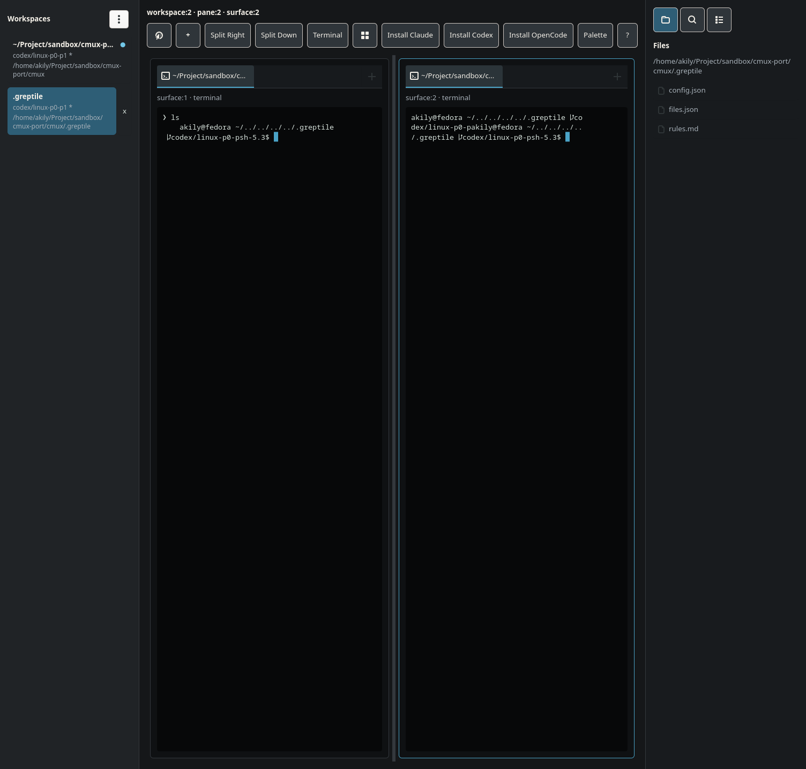
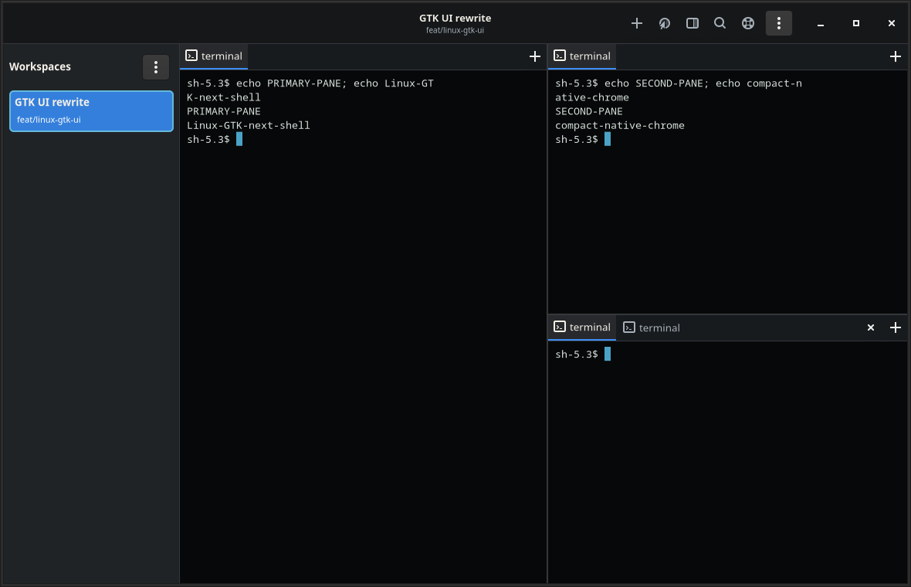

A complete GTK presentation rewrite that brings the Linux port to the density, clarity,
stability, and terminal-first feel of normal cmux—without rewriting the Rust core,
Ghostty integration, WebKit runtime, session model, or socket API.
01 · Executive summary
The rewrite boundary is the GTK presentation layer.
The Linux port already implements most of the product. The problem is not missing capability;
it is that nearly every UI concern lives inside one large file, consumes untyped JSON snapshots,
refreshes through polling, and carries hardcoded styling. That structure makes the interface
visually inconsistent, fragile while editing, and expensive to improve.
The GTK shell, widget ownership, snapshot parsing, CSS organization, focus routing, component reconciliation, and coarse polling loop.
Deliver
A compact native Linux UI that visually reads as cmux, retains surface identity, updates reactively, and can be tested one component at a time.
Core rule: do not mechanically split gtk_ui.rs into smaller files and call that a rewrite.
The rewrite is complete only when untyped parsing, periodic full refresh, broad reconstruction, and cross-component ownership are removed.
02 · Visual north star
Match the hierarchy and density of normal cmux.
The macOS UI is the canonical product reference. Linux should not imitate platform-specific
traffic lights or AppKit controls, but it should preserve the same proportions, information
hierarchy, compact chrome, split topology, and localized attention cues.
Primary reference: dense, terminal-first, low-chrome, multi-pane cmux.Open full image
Small type, short toolbars, narrow dividers, and minimal outer padding. Most pixels belong to terminal or browser content.
Quiet by default
Inactive chrome stays near-monochrome. Blue is reserved for selection, focus, unread state, drag targets, and primary action feedback.
Information-rich sidebar
Rows show task title, status, branch, directory, PR/issue/port metadata, and latest notification without becoming card-heavy.
Native Linux behavior
GTK window controls, dialogs, IME, primary selection, drag-and-drop, Wayland/X11 semantics, system scaling, and accessibility remain native.
03 · What is wrong today
The current UI is both visually inefficient and difficult to refine safely.
The screenshot below was captured from the current GTK build on 2026-07-25 at 1504×1436.
It confirms that the usability problem is not abstract: chrome, cards, duplicated labels, and
wide side regions consume a large share of the window while the terminal content remains sparse.

Current GTK baseline captured from the running app.Open full image

Implemented first tranche: compact next shell at 1180×760, enabled with CMUX_LINUX_UI=next.Open full image
Toolbar dominates the workspace
A full row of large bordered buttons exposes installation, split, terminal, palette, and help actions at all times. Normal cmux keeps these actions compact, contextual, or in menus.
Pane chrome is nested like cards
Each split has an outer border, internal padding, a tab card, a duplicated surface:n · terminal label, and another inset terminal rectangle. The canonical UI uses one thin tab strip and lets content meet pane edges.
Useful width is squeezed
The workspace sidebar, broad pane gutters, and always-visible right sidebar leave narrow terminals even in a 1504 px window. The reference UI fits more panes while preserving readable columns.
Hierarchy exposes implementation details
The title shows workspace:2 · pane:2 · surface:2; pane labels repeat internal IDs; generic action names compete with the actual task. User-facing titles, status, branch, and notification context should lead.
Sidebar density is poorly balanced
Rows truncate early despite ample vertical space, selection resembles a large card, and the close control floats outside the row. Normal cmux fits richer metadata with tighter alignment and less framing.
Terminal presentation is not trustworthy
The captured fallback terminal text wraps and overlaps awkwardly. The rewrite must treat embedded Ghostty as the primary production path and isolate fallback previews from the main UI contract.
Current condition
User impact
Rewrite response
~20k-line gtk_ui.rs
Unrelated widgets, styling, input, caches, and tests change together.
Component controllers with explicit ownership and bounded modules.
serde_json::Value inside widget code
Silent field drift, defaults, aliases, and repeated parsing make state inconsistent.
Typed immutable UI projections with serialization only at protocol boundaries.
500 ms snapshot reconciliation
Visible delay, wasted idle work, draft/focus suppression, and broad rebuilds.
Typed in-process change events, revisions, and targeted reconciliation.
10 ms / 250 ms browser polling
Background work continues even when no request is active.
Request channels that wake only the owning browser controller.
Inline hardcoded CSS
Inconsistent spacing, colors, states, and no maintainable theme contract.
Compiled GTK resources, semantic classes, and centralized metrics.
Widget reconstruction plus caches
Focus loss and avoidable Ghostty/WebKit lifecycle risk.
Stable keyed controllers and a surface registry keyed by SurfaceId.
Limited visual/accessibility regression coverage
UI regressions are discovered by users rather than CI.
Pinned Linux screenshot scenarios plus semantic and AT-SPI assertions.
04 · UX invariants
These rules are not negotiable.
Stable surfaces: ordinary workspace, tab, split, sidebar, and layout changes must not recreate Ghostty or WebKit hosts.
Typing first: a terminal key event must not build snapshots, traverse unrelated widgets, or wait for the app-wide model lock.
One focus owner: terminal, browser content, omnibar, sidebar, settings, palette, document, and dialog focus are explicit states.
Draft safety: rename, search, omnibar, settings, TextBox, and agent prompt drafts survive unrelated updates and failed submissions.
Shared actions: keyboard, click, menu, palette, CLI, socket, Ghostty, and WebKit callbacks converge on the same core mutation path.
Topology integrity: pane tabs are independent from split geometry; Canvas and Splits reuse the same surface hosts.
Attention consistency: sidebar badges, tab dots, pane rings, desktop notifications, and jump-to-unread derive from one notification index.
Native input: IME, compose sequences, clipboard and primary selection, web shortcuts, terminal mouse reporting, and drag-and-drop keep working.
Accessibility: every state conveyed by color is also represented by text, icon, accessible state, or structure.
Incremental parity: no feature disappears while its replacement is under construction.
05 · Target architecture
Three layers with one-way ownership.
Keep the authoritative product model display-independent. Insert a typed UI projection and event bridge.
Make GTK responsible only for native widgets, local edit state, focus, and stable surface hosting.
Plain scroll remains local to content; modifier gestures control the Canvas.
Notifications and attention
One typed index keyed by workspace and surface.
Sidebar badge, tab dot, pane ring, notification center, desktop delivery, and jump ordering share that index.
Use a 2 px ring that does not alter pane allocation.
Short flash animations respect reduced motion and remain separate from persistent unread state.
Right sidebar, settings, and dialogs
Files, Find, Sessions, Feed, and Dock have separate controllers under a shared sidebar shell.
Virtualize large lists and move filesystem traversal off the main thread.
Settings use a category list with lazily created typed pages and consistent row anatomy.
A dialog coordinator serializes close, resume, paste, clipboard, auth, and destructive confirmations per window.
All controls expose accessible roles, names, values, states, and keyboard equivalents.
08 · Migration phases
Keep the app usable throughout the rewrite.
PHASE 0
Baseline and fixtures
Capture current behavior, deterministic renderer fixtures, Linux screenshots, focus flows, surface-identity counters, and performance traces. Add the legacy/next selector.
Gate: legacy UI remains the default and all current features are still available.
PHASE 1
Typed UI model
Create ui_model. Build the public renderer JSON by serializing typed snapshots and prove compatibility with representative fixtures.
Gate: no visible UI change; socket and renderer contracts remain compatible.
PHASE 2
Runtime bridge and change hub
Introduce AppHandle, typed actions, revisioned change events, and event completeness instrumentation. Route GTK and socket mutations through the same gateway.
Gate: legacy GTK can render while diagnostics prove all mutation domains invalidate correctly.
Gate: workspace, tab, and split operations do not recreate Ghostty/WebKit hosts.
PHASE 6
Surface controllers
Migrate terminal, browser, document, Markdown, diff, project, agent session, feedback, and Canvas one surface family at a time.
Gate: each migrated family has focused tests and a temporary component-level fallback.
PHASE 7
Right sidebar, settings, notifications, dialogs
Complete the remaining shell regions, command palette, shortcut help, accessibility, and string catalog.
Gate: all settings, beta gates, custom sidebars, notification flows, and keyboard-only paths are represented.
PHASE 8
Remove polling
Disable the 500 ms snapshot loop and browser request timers. Keep an opt-in low-frequency recovery poll for one release while event completeness soaks.
Gate: no stale-state failures in long-running, multi-window, external-socket, and background-process scenarios.
PHASE 9
Cut over and delete legacy UI
Make the next shell the default, retain one emergency flag window, migrate remaining tests, then remove gtk_ui.rs and temporary compatibility paths.
Gate: two stable release cycles without a rollback-class issue.
09 · Validation
Test appearance, behavior, identity, and accessibility.
Unit
Typed projection and serialization compatibility.
Change masks and event completeness.
Draft, focus, selection, tabs, split tree, and notification reducers.
Every UI entry point maps to the shared action path.
Component
Apply immutable view models and assert widget properties, ordering, CSS classes, and accessible state.
Apply a second model and prove widgets are reused.
Verify focused editors are protected and errors retain drafts.
Integration
Xvfb for X11 and headless Weston for Wayland.
Drive UI state through the public socket.
Separate real Ghostty and WebKit smoke lanes.
Multi-window, restore, drag/drop, IME, clipboard, and external mutation coverage.
Visual and accessibility
Pinned GTK, fonts, icons, scale, locale, renderer, and viewport.
Golden scenarios based on the canonical cmux compositions.
AT-SPI roles, names, values, focus order, and keyboard actions.
Required visual scenarios
Dense nested terminal splits
Mixed terminal and browser panes
Unread sidebar badge and pane ring
Workspace groups and long metadata
Right sidebar Files and Find
Command palette and shortcut help
Settings in dark, light, and high contrast
Canvas overview and focused offscreen pane
Narrow 900×700 layout
Scale factors 1× and 2×
macOS screenshots are composition references, not pixel goldens. The executable goldens must be Linux screenshots produced in a pinned test environment.
10 · Performance budgets
Make responsiveness measurable.
< 8 ms p95
GTK key event to Ghostty input enqueue
< 50 ms p95
Authoritative mutation to visible chrome update
< 1%
Idle CPU for an inactive window
55+ FPS
Sidebar, divider, and Canvas drag on baseline hardware
< 8 ms
One-row sidebar reconciliation in a 100-row list
0 remounts
Surface host remounts during ordinary tab/workspace switching
< 2 ms
GTK main-thread hold of the shared application lock
< 750 ms
Warm restored window to interactive state
< 25 MiB
Chrome memory per window, excluding Ghostty/WebKit
Typed focus controller, restoration tokens, and X11/Wayland acceptance tests.
Mac imitation conflicts with Linux conventions
Copy density and hierarchy while keeping GTK controls, dialogs, input, accessibility, and system modes native.
Two UIs double maintenance cost
Share typed models/actions immediately, migrate vertical slices, and set deadlines for deleting legacy component paths.
Public renderer schema drifts
Serialize the typed model into the existing schema and run fixture compatibility tests before GTK consumes it directly.
Distro differences destabilize screenshots
Pin the visual-test image and pair pixels with semantic layout assertions.
12 · File map
Critical implementation surfaces.
linux/src/gtk_ui.rs
Legacy GTK implementation. Migrate behavior and tests by component, then delete.
linux/src/app.rs
Authoritative state. Publish typed invalidations from shared mutation paths without importing GTK.
linux/src/renderer.rs
Build typed snapshots, then serialize them for the existing JSON contract.
linux/src/ui.rs
Adopt the shared runtime handle and select legacy/next GTK implementations.
linux/src/server.rs
Route external mutations through the same handle so socket changes publish UI events.
linux/src/gtk_ghostty.rs
Remain the Ghostty native boundary; expose a smaller typed surface-host API.
linux/src/gtk_webkit.rs
Remain the WebKit runtime boundary; replace polls with channels and typed callbacks.
linux/src/config.rs
Store rollout, appearance, density, and recovery settings through typed configuration.
linux/build.rs · linux/Cargo.toml
Compile GTK resources and add test/build dependencies behind appropriate features.
linux/tests/gtk_* · linux/tests/visual/
New component, input, accessibility, surface identity, event completeness, and visual suites.
13 · Definition of done
The UI must be both better-looking and structurally better.
gtk_ui.rs is removed.
GTK consumes typed snapshots and emits typed actions.
Protocol JSON parsing is confined to compatibility boundaries.
The 500 ms snapshot poll and browser request polls are gone.
Revision-gap recovery works without permanent background polling.
Ghostty and WebKit identity remains stable through normal navigation and layout changes.
Sidebar, pane tabs, splits, browser chrome, and notification rings visibly match the cmux north star.
Dark, light, high contrast, scaling, and reduced motion are supported.
Terminal typing, IME, clipboard, browser focus, drag/drop, shortcuts, and chords pass on X11 and Wayland.
Settings, notifications, sidebars, Canvas, documents, diffs, projects, and agent sessions have typed controllers.
Visual, semantic, AT-SPI, identity, and performance gates pass.
Socket, renderer, persistence, and automation contracts remain compatible.
The new shell ships as default for two stable cycles without a rollback-class issue.
The legacy kill switch and temporary component flags are deleted.
Final acceptance test: open the canonical dense workspace scenario on Linux.
It should immediately read as cmux—compact workspace navigation, stable nested panes, quiet chrome,
clear focus and unread state, and nearly all available space devoted to work.

{kind=link}
{kind=link}
{kind=link}
{kind=link}
{kind=link}
{kind=link}
{kind=link}
{kind=link}